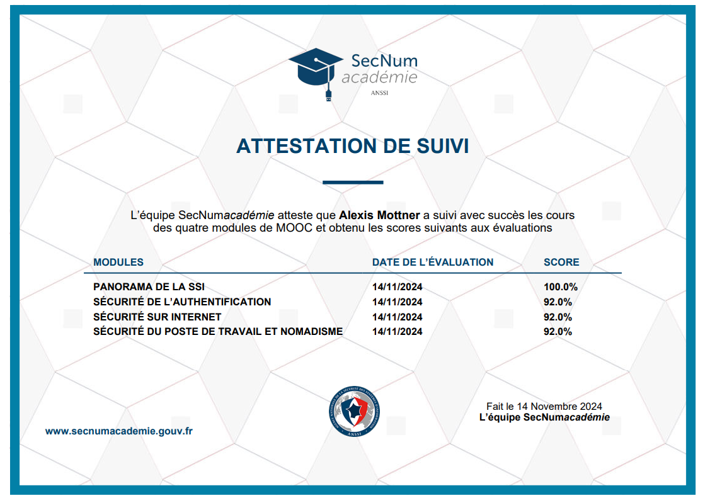

Accueil
Le BTS services informatiques aux organisations apprend à exploiter des données, dispense les bases de la programmation et du développement d’applications, et apporte des enseignements sur le fonctionnement d’une entreprise. Pour choisir en toute connaissance cause, l’Étudiant décortique pour vous les matières enseignées, les qualités pour réussir au mieux dans la formation, les métiers accessibles et les poursuites d’études possibles avec le BTS SIO.
À propos de moi
Prenom : Alexis
Nom : MOTTNER
Date de naissance : 9 juin 2006
Bonjour, je m'appelle Alexis MOTTNER et je vous souhaites la bienvenue sur mon Portfolio.
Vous pourrez retrouvez plusieurs sections parcourant mon cursus scolaire et professionnel.
Apprentissage
Certifications
Mes Projets
Portfolio
Utilisations de HTML et CSS :


Veille Technologie
Loisir

Contact
Email : mottner90alexis@gmail.com